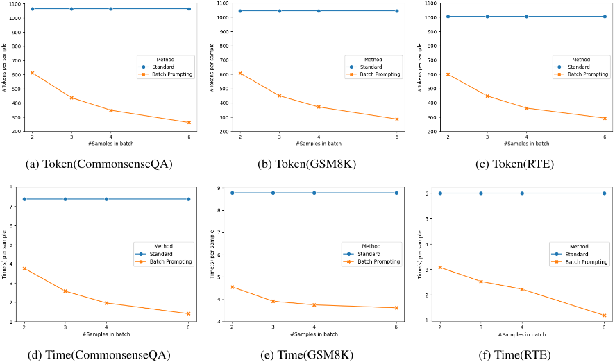
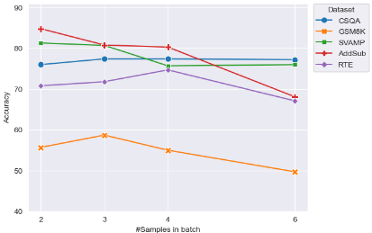
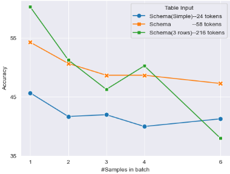

Batch Prompting：利用 LLM API 实现高效推理
论文针对大规模调用 LLM API 时 token 与时间成本高昂的问题（1 万样本用 gpt-3.5-turbo 约需 40 美元与 8 小时，gpt-4 超过 600 美元），提出 batch prompting：把多个样本连同位置标识符 [index] 打包进同一次请求，让模型一次推理输出 b 个答案，将调用次数从 N 降为 N/b。理论上，few-shot in-context learning 场景下大部分 token 被共享示例消耗，因此成本随批大小 b 近似反线性下降。在覆盖常识问答、算术推理与 NLI/NLU 的 10 个数据集上，Codex 最多取得 5 倍 token 与时间节省且准确率相当或更好；GPT-3.5 与 GPT-4 上结论同样成立，chat 模型甚至常有性能提升。分析表明性能随 b 增大而下降（b=6 时五个数据集中四个显著下降），b=3 或 4 是较好平衡点，任务复杂或输入上下文长时退化更明显。方法可与 CoT、end-to-end、program-based 等推理方式即插即用地组合。
对大量样本逐一调用 LLM API 推理时成本高昂：few-shot 示例 token 在每次调用中被重复消耗，token 计费与调用次数线性相关；同时 API 调用开销与每分钟请求速率限制进一步推高时间成本，阻碍大规模 LLM 应用（如数据集评测、海量客户请求处理）。
batch prompting：单次推理同时处理 b 个样本。将 K 个 few-shot 示例按每批 b 个分组，批内先按顺序排列所有输入上下文、再按相同顺序排列对应输出作为示范，测试样本同样按批分组附在提示末尾；用位置标识符 '[index]' 帮助模型对齐输入输出顺序并便于解析答案。无需修改 API 或模型。理论分析：few-shot 场景下提示 token 远多于生成 token，token 效率随 b 近似反线性提升；时间上调用次数从 N 降为 N/b，在 API 开销与限流占主导时足以抵消生成更长序列带来的额外解码时间。
Codex 上 10 个数据集（CommonsenseQA、StrategyQA、GSM8K、SVAMP、AQuA、AddSub、MultiArith、RTE、MNLI、SST-5）：每批 6 个样本时 token 与时间成本最多降低 5×，且成本随批大小近似反线性下降
选取最优 b 时，batch prompting 在全部 10 个数据集上准确率与 standard prompting 相当或更好
GPT-3、GPT-3.5、GPT-4 上结论一致；chat 类模型（GPT-3.5/GPT-4）使用 batch prompting 往往还能获得性能提升
性能通常随 b 增大而下降，五个数据集中四个在 b=6 出现显著下降；12 个 in-context 示例设置下 b=3 或 4 常为成本与性能的较好平衡
基于相似性（k-means）或多样性（vote-k）的批内样本分组相比随机分组无性能提升
输入上下文越长（WikiTQ 表格实验：从约 24 token 的简化 schema 到约 216 token 的含三行数据表格），随 b 增大的性能下降越陡
与 end-to-end、CoT、program-based（Binder、Program-of-Thought）等推理方法组合均能保持相当或更好性能
与通过改换模型架构或模型级联来提效的已有工作不同，batch prompting 不需要任何训练、定制模型托管或 API 改动，可直接用于任意现成 LLM API（OpenAI、Google、Anthropic 等）；它在 in-context learning 研究中新增'批量化'维度，把成本效率作为提示设计的一等目标，并给出 token 效率随批大小反线性下降的理论分析与 b-性能权衡的实证刻画。
相关度级别：high
命中能力域：3.2 提示工程 | 3.5 评测与可靠使用 | 3.1 上下文工程与记忆
理由：直接命中团队核心能力域：batch prompting 本身是一种提示技术与模式（3.2），论文给出了批内示例组织方式、位置标识符对齐、与 CoT/program-based 推理组合的具体做法；同时它聚焦 LLM API 使用的成本与效率优化（3.5），用 10 个数据集实证了 token/时间节省与性能的权衡曲线，正是团队'把模型用好而非训练模型'的关切。批内上下文打包与 [index] 结构也属于结构化上下文组织（3.1，次要触点）。团队在批量代码审查、批量测试生成、评测集大规模跑分、知识库批量问答等场景都会遇到 N 次重复调用带来的成本问题，该方法无需改 API 即可落地。
建议动作：深入精读并做内部分享
arXiv:2301.08721v2 [cs.CL] 2023年10月24日
上海交通大学 blankcheng@sjtu.edu.cn
华盛顿大学 jkasai@cs.washington.edu
使用大语言模型（LLMs）对大量样本执行推理，在工业界和实际应用中可能在计算和资金上成本高昂。我们提出了 batch prompting，这是一种简单而有效的提示方法，使 LLM 能够以批次方式运行推理，而不是一次只处理一个样本。我们的方法在保持下游性能的同时，降低了 token 成本和时间成本。我们从理论上证明，在少样本上下文学习（few-shot in-context learning）设定下，推理成本随每个批次中样本数量的增加几乎呈线性下降。我们在涵盖常识问答（commonsense QA）、算术推理以及自然语言推理/理解（NLI/NLU）的十个数据集上广泛验证了 batch prompting 的有效性：batch prompting 显著降低了 LLM（Codex）推理的 token 成本和时间成本（批次内含六个样本时最高可达 5 倍），同时取得了更优或相当的性能。对于最先进的基于对话的 LLM，例如 GPT-3.5 和 GPT-4，我们表明 batch prompting 的优势同样成立。进一步分析表明，每个批次中的样本数量以及任务的复杂度会影响其性能。此外，batch prompting 还可以应用于使用 LLM 的不同推理方法。我们的代码可在以下网站获取：//github.com/xlang-ai/batch-prompting
大语言模型（LLMs）已在零样本/少样本设置下通过上下文学习（in-context learning）展现出强大的能力（Brown et al., 2020; Chen et al., 2021; Chowdhery et al., 2022; Ouyang et al., 2022）。近期的许多工作通过引出推理步骤（Wei et al., 2022; Wang et al., 2022; Khot et al., 2022; Cheng et al., 2022; Yao et al., 2022）、选择具有代表性的上下文示例（Liu et al., 2022; Su et al., 2022; Agrawal et al., 2022）以及设计提示模板（Jiang et al., 2020; Bach et al., 2022; Arora et al., 2022），在上下文学习方面取得了进展。
香港大学 tyu@cs.hku.hk
我们首先从理论上证明，在少样本上下文学习（few-shot in-context learning）设定下，API 调用过程中消耗的 token 大部分是少样本示例，只有一小部分 token 预算用于特定的推理样本（第 2 节）。因此，在批量提示（batch prompting）中增大 b 会以反比线性的方式降低 token 和时间成本。我们使用 Codex（一种在代码数据上微调的强大 GPT-3 变体），在涵盖常识问答、算术以及自然语言推理/理解（NLI/NLU）的多种下游数据集上广泛验证了批量提示的有效性（第 3 节）。我们还在最先进的 GPT-3.5 和 GPT-4 模型上测试了批量提示。批量提示显著降低了使用大语言模型（LLM）时的 token 数量和运行时间，同时在全部十个数据集上取得了相当甚至更好的性能。
在进一步分析（第 4 节）中，我们发现批次中的样本数量和任务的复杂度会影响其性能。此外，我们证明批量提示在不同的推理方法（例如端到端、思维链（Chain-of-Thought, CoT）和代码生成）下均能良好工作，这表明批量提示是传统提示的一种高效即插即用替代方案。
我们首先介绍批量提示（batch prompting），它是标准提示的一种高效替代方案。随后，我们比较批量提示与标准提示在 token 和时间上的开销，以展示我们方法的高效性。
提示 token 和生成 token，且每次调用需要 3 秒才能完成（这是实际使用中较为合理的平均时间）。
使用大语言模型（LLM）进行上下文学习（in-context learning）的传统范式（即图 1 中的标准提示，standard prompting）如下：选取 K 个同时包含上下文（context，例如问题）和输出（output，例如答案）的上下文少样本示例（in-context few-shot exemplars）来构建输入提示，在提示末尾追加一个仅含上下文的测试样本，然后利用 LLM 为该测试样本生成响应。
在本文中，我们关注一个共有 N 个测试样本的现实场景，这种场景在对数据集进行基准测试（benchmarking）或处理大量客户请求时十分常见。在这种情况下，在标准提示范式下需要进行 N 次独立的 LLM 推理调用。
批量提示（batch prompting）使 LLM 能够在单次推理运行中为一个批次内的多个样本生成响应，从而将 LLM 推理时间从 N 缩短至 N/b，其中 b 为一个批次中的样本数量。具体而言，如图 1 所示，我们的提示将 K 个上下文示例（in-context exemplars）划分为 K/b 个批次，每个批次包含 b 个示例作为演示（demonstrations）。在每个批次中，各演示的上下文按特定顺序排列在开头，其对应的输出随后按相同顺序置于其后。然后，b 个测试样本的上下文被归组在一起，置于输入提示的末尾。通过这种方式，LLM 从上下文演示中学习，并为整批测试样本生成相应的响应。我们在每个批次内添加位置标识符 ' [ index ] '，以 1）协助 LLM 识别输入上下文与生成响应之间的顺序对应关系，2）简化生成响应的解析过程。
一次 LLM 调用的成本随 token 数量线性增长，其中包括输入提示 token（少样本示例与指令）以及生成的 token（例如依据 OpenAI 的定价）。在标准提示中，大部分 token 被提示 token 所消耗，因为提示 token 的数量通常远多于生成 token 的数量，以便 LLM 能够更好地从上下文示例中学习。因此，花费在生成 token 上的 token 比例越大，总成本就越经济。
我们将 token 效率 η 定义为一次 LLM 调用中花费在生成 token 上的 token 比例。对于标准提示与批量提示（batch prompting）（为简洁起见，若存在指令 token 则将其省略）：

当 K ≫ 1 且 b < K 时，η_batch 几乎随 b 呈反比线性变化，因此增大批量提示中的 b 可以大幅降低 token 成本。
直观上，批量提示通过将 API 调用次数从 N 减少到 N/b 来缩短推理时间。考虑到 Transformer（Vaswani et al., 2017）的解码时间，与标准提示相比，批量提示由于会生成更长的响应，其成本将随 b 的增大而增加。我们在附录 A 中从 Transformer 架构的角度给出了详细的推导。
然而，由于大多数终端用户已经习惯于且只能使用 LLM API 服务，相对于 API 调用的开销以及 OpenAI 等公司设置的每分钟请求速率限制而言，这部分时间成本是微不足道的（在主实验中观察到）。此外，在网络连接不稳定或缓慢的情况下，用户会希望以尽可能少的 LLM 调用来完成任务。
因此，在实际应用中，通过批量提示将调用次数从 N 减少到 N/b，能够实质性地降低时间成本。需要注意的是，当 API 调用开销和速率限制在未来不再是时间成本的主要瓶颈时，附录 A 中讨论的为生成更长序列而增加的解码时间便不容忽视，届时批量提示带来的时间缩减将不再那么显著。
由于 LLM 基础设施/服务会随时间变化，与时间成本相比，token 成本比较是一种更可靠、更持久的度量方式。
我们在十个多样化的数据集上对批量提示进行了广泛评估。我们的结果表明，批量提示最多可实现 5 倍的 token 与时间效率提升（每批包含六个样本），同时下游性能相近甚至更优。
我们在十个数据集上评估批量提示，这些数据集涵盖常识问答、算术推理以及自然语言理解/推理：CommonsenseQA (Talmor et al., 2019)、StrategyQA (Geva et al., 2021)、GSM8K (Cobbe et al., 2021)、SVAMP (Patel et al.,
| Task | Dataset | Standard | Batch |
|---|---|---|---|
| Commonsense | CSQA | 77 . 2 | 77.4 (+0 . 2) |
| StrategyQA | 73.3 | 71 . 0( - 2 . 3) | |
| Arithmetic | GSM8K | 55 . 7 | 58.7 (+3 . 0) |
| SVAMP | 83.7 | 81 . 3( - 2 . 4) | |
| AQuA | 46.1 | 42 . 1( - 4 . 0) | |
| AddSub | 86.6 | 84 . 8( - 1 . 8) | |
| MultiArith | 97 . 5 | 98.7 (+1 . 2) | |
| NLI/NLU | RTE | 76.9 | 74 . 7( - 2 . 2) |
| MNLI | 65 . 3 | 65.7 (+0 . 4) | |
| SST-5 | 51.3 | 49 . 7( - 1 . 6) |
| Task | Dataset | Standard | Batch |
2021)、AQuA (Ling et al., 2017)、AddSub (Hosseini et al., 2014)、MultiArith (Roy and Roth, 2015)、RTE (Bentivogli et al., 2009)、MNLI (Williams et al., 2018) 以及 SST-5 (Socher et al., 2013)。对于 CommonsenseQA、AQuA、AddSub、MultiArith 和 RTE，我们评估整个开发集/测试集。对于其余五个数据集，考虑到大语言模型（LLM）API 的成本，我们评估前 300 个测试样本。
我们在十个数据集上的主要实验中评估 OpenAI Codex (code-davinci-002) 作为大语言模型（LLM）。在撰写本文时，Codex 是免费提供的，但其 token 消耗的降低幅度与其他 LLM 相同，这确保了实验中的 token 成本具有普遍性。我们还在其他最先进的 LLM 上测试了批量提示（batch prompting）的性能，包括 GPT-3 (text-davinci-003)、GPT-3.5 (gpt-3.5-turbo) 和 GPT-4 (gpt-4)。考虑到预算，对于 GPT-4，我们对每个数据集测试前 100 个样本。解码温度设为 0。对于每个数据集，我们从训练集中人工选取 12-shot 样本作为上下文示例（in-context exemplars），并在答案中包含思维链（Chain-of-Thought，Wei et al., 2022, CoT）推理步骤（第 4.4 节讨论了 CoT 之外的其他推理方法）。我们选择 12 个示例是因为 12 是 2、3、4、6 的最小公倍数，因此在消融研究中易于分析将它们按每批 2、3、4、6 个样本分组所产生的影响。更多实验细节和完整结果列于附录 B 中。
图 2 比较了标准提示（standard prompting）与批量提示（batch prompting）的 token 成本和时间成本。如图所示，批量提示大幅降低了使用 Codex 的标准提示在 token 和时间两方面的成本（每批包含 6 个样本时最高可达 5 倍）。此外，成本的下降幅度与每批样本数量之间几乎呈反比线性关系，这验证了我们在第 2.3 节和第 2.4 节中的分析。需要注意的是，时间成本包含了 API 调用开销和速率限制阻塞，这些在常用的 OpenAI 及其他 LLM 服务中普遍存在。对于这些因素不构成时间瓶颈的 LLM 服务，如第 2.4 节所讨论的，较大的 b 所带来的解码时间增加也不应被忽视。由于 LLM 基础设施随时可能发生变化，token 效率的提升比时间更容易比较；图 2 中所示的 token 减少量应当随时间推移对任何 LLM 都成立。
| Dataset. | GPT-3.Standard | GPT-3.Batch | GPT-3.5.Standard | GPT-3.5.Batch | GPT-4.Standard | GPT-4.Batch |
|---|---|---|---|---|---|---|
| CSQA | 78 . 3 | 75 . 8 | 72 . 9 | 75 . 4 | 84 . 0 | 86 . 0 |
| GSM8K | 58 . 0 | 55 . 0 | 71 . 0 | 76 . 7 | 96 . 0 | 93 . 0 |
| SVAMP | 86 . 7 | 85 . 8 | 84 . 7 | 81 . 3 | 98 . 0 | 95 . 0 |
| AddSub | 99 . 2 | 98 . 3 | 89 . 3 | 92 . 0 | 99 . 0 | 99 . 0 |
| RTE | 88 . 3 | 88 . 3 | 77 . 6 | 81 . 6 | 92 . 0 | 90 . 0 |
| Dataset. | GPT-3.Standard | GPT-3.Batch | GPT-3.5.Standard | GPT-3.5.Batch | GPT-4.Standard | GPT-4.Batch |
表 1 显示，批量提示（采用最优的 b，即每批样本数量）在全部十个数据集上的表现与标准提示相当，甚至更优。因此，我们建议 LLM 用户考虑在实际应用中采用批量提示，以便在保持良好性能的同时节省金钱和时间。
我们在其他一些最先进的 LLM 上实验了批量提示，包括 GPT-3、GPT3.5（ChatGPT）和 GPT-4。
表 2 展示了这些 LLM 的性能。所有受测的 LLM 都展现出与 Codex 类似的能力：批量提示在各数据集上保持了下游性能。实际上，对基于聊天的模型采用批量提示往往会带来性能提升。我们推断原因在于：GPT-3.5 和 GPT-4 接受系统消息（system message）中的特定角色设定作为指令，这使它们能够更好地遵循批量提示指令，按批次进行输入和输出。如第 2 节所述，批量提示的 token 效率应当对不同 LLM 都成立，不过时间的减少量可能因 LLM 推理实现的不同而有所差异。


| Dataset | Random | Similar | Diverse |
|---|---|---|---|
| CSQA | 77 . 4 | 77 . 4 | 78 . 2 |
| GSM8K | 58 . 7 | 57 . 7 | 55 . 7 |
| SVAMP | 81 . 3 | 81 . 3 | 80 . 7 |
| AddSub | 84 . 8 | 83 . 2 | 84 . 1 |
| RTE | 74 . 7 | 70 . 4 | 70 . 8 |
| Dataset | Random | Similar | Diverse |
在本节中，我们评估影响批量提示性能的因素以及成本与性能之间的权衡。我们还证明了批量提示可以应用于多种 LLM 提示方法，例如端到端（end-to-end）和代码生成（code generation）。
图 3 展示了每批次样本数量 b 对批量提示性能的影响。随着 b 的增大，性能通常会下降，在五个数据集中的四个上，当 b = 6 时出现了显著下降。然而，最优性能并不总是在 b = 2 处取得。选择 b = 3 或 b = 4 通常能在节省更多 token 和时间的同时获得良好的性能。随着 b 的增大，时间/token 成本的降低幅度逐渐减小，这表明，在实验中给定 12 个上下文示例（in-context examples）的情况下，b < 6 是成本与性能之间的良好平衡。
在此，我们考察样本的选择方式（即如何将样本分组为批次）是否会影响批量提示（batch prompting）的性能。在对测试样本进行分组时，我们研究了上下文学习（in-context learning）中两种被广泛采用的样本选择方法：将更相似的样本（Rubin et al., 2021; Liu et al., 2022）或更多样的样本（Su et al., 2022; Agrawal et al., 2022）分组为批次。具体而言，给定 N 个测试样本，为了对相似样本进行分组，我们使用 k-means 聚类，并通过将冗余样本移动到距离其最近的规模 < b 的组中，将每个簇后处理为大小均为 b 的组。为了对多样样本进行分组，我们采用 vote-k 方法（Su et al., 2022）来迭代地选择多样且具有代表性的样本组。
如表 3 所示，基于相似性和基于多样性的选择方法均未表现出优于随机分组的改进。我们推测，其原因可能在于这两种方法都假设批内样本能够从先前的相似样本或多样样本（即位于批次前部的样本）中获益。然而，这些缺乏真实输出（ground truth outputs）的较早样本可能会给批内其余样本带来误差传播。为批量提示开发有效的样本选择策略，可能是未来研究进一步提升批量提示性能的一个有前景的方向。
在表 1 中，最陡峭的下降（从 46.1 降至 42.1）出现在 AQuA 数据集上：这是一个以多选问答形式呈现的算术推理任务。一种可能的解释是，AQuA 比其他数据集更难，其绝对准确率最低，仅为 46.1%，因此当输入上下文被分组在一起时，大语言模型（LLM）更容易受到干扰。
我们进一步研究了另一个可能影响性能的任务方面：随着输入上下文变长，批量提示往往会导致更显著的性能下降。我们使用 WikiTQ (Pasupat and Liang, 2015) 这一具有挑战性的表格问答（Table QA）数据集来验证我们的假设。由于包含多行和多列，表格含有更长的输入 token。我们针对逐渐增加的表格输入长度进行了实验：简化的表格模式（即不含列类型的列名；平均每表 24 个 token）、表格模式（平均每表 58 个 token），以及包含三行表格数据的表格模式（平均每表 216 个 token）。
| Dataset. | End-to-end.Standard | End-to-end.Batch | Program.Standard | Program.Batch |
|---|---|---|---|---|
| CSQA | 81 . 5 | 80 . 4 | - | - |
| GSM8K | 21 . 3 | 17 . 3 | 72 . 7 | 73 . 0 |
| SVAMP | 70 . 7 | 68 . 3 | 86 . 0 | 86 . 3 |
| RTE | 85 . 2 | 83 . 4 | - | - |
| WikiTQ | - | - | 54 . 3 | 50 . 7 |
| Dataset. | End-to-end.Standard | End-to-end.Batch | Program.Standard | Program.Batch |
如图 4 所示，在标准提示（b=1）下，输入带有三行表格数据的表格模式在问答性能上占优。然而，在使用批量提示、b 增大时，该设置也出现了最陡峭的性能下降。输入上下文越短，批量提示的性能就越稳定。这表明，在应用批量提示时，较长的任务输入更容易导致混淆和性能下降。
在主实验（第 3 节）中，我们对全部十个数据集使用了思维链（Chain-of-Thought, CoT）。本节中，我们考察批量提示是否适用于其他常见的大语言模型（LLM）推理方法。我们另外实验了两种推理方法：端到端（end-to-end，即直接提示 LLM 输出答案而不经过中间步骤）和基于程序（program-based，即提示 LLM 生成程序来回答问题）。对于基于程序的方法，我们在 WikiTQ 上采用 Binder（Cheng et al., 2022），在 GSM8K 和 SVAMP 上采用 Program-of-Thought（Chen et al., 2022, PoT）。
如表 4 所示，端到端和基于程序这两种方法都能受益于批量提示的高效率，同时在任务上保持相近甚至更好的性能。这表明批量提示是一种即插即用的替代方案，可以在多种场景下与各种推理方法相结合。
提升上下文学习（in-context learning）。大语言模型（LLM；Brown et al., 2020; Chen et al., 2021; Chowdhery et al., 2022）令人瞩目的能力引发了近期旨在提升上下文学习（ICL）性能的研究热潮。一些工作提出了不同的推理方法来提示 LLM（Wei et al., 2022; Zhou et al., 2022; Khot et al., 2022），相比直接提示 LLM 输出答案取得了显著改进。另一些工作（Chen et al., 2022; Gao et al., 2022; Cheng et al., 2022）则通过生成程序来解决推理任务。还有一类工作（Liu et al., 2022; Su et al., 2022; Agrawal et al., 2022）专注于选择更好的上下文示例。本工作为面向大规模真实世界应用的 ICL 增添了一个新的维度：批量提示，在节省预算和时间的同时取得良好甚至更好的性能。
高效语言生成。近期大量工作提出了高效语言生成的方法，包括机器翻译（Kasai et al., 2020, 2021a,b）、语言建模（Katharopoulos et al., 2020; Peng et al., 2021, 2022）以及模型级联（Varshney and Baral, 2022）。其中许多方法通过引入标准 transformer 的替代架构来实现这类效率提升，这使得它们难以在真实世界场景中应用或部署。我们的方法是近期各种提示方法的一种简单而有效的替代方案，因而适用于任何现成的语言模型 API，例如 OpenAI、Google、Anthropic 或任何其他可用的私有 LLM API，且无需任何额外的训练或定制的模型托管。
批量提示（batch prompting）已被证明是一种能够有效缩减时间和词元（token）开销的方法。尽管如此，在各种场景中实施该方法时，仍需牢记若干关键注意事项。首先，为了使其收益最大化，输入提示词元的长度应当（显著）大于输出词元的长度。因此，它可能不适用于故事生成这类“重输出”（heavy output）任务。值得注意的是，虽然我们的实验是在少样本上下文学习（few-shot in-context learning）设置下进行的，但该方法同样适用于指令遵循（instruction-following）范式，既可以单独使用，也可以与之结合使用，只需将少样本输入替换为指令或在少样本输入之外附加指令即可。唯一的关键因素是推理样本共享输入词元的长度。其次，可能会观察到性能下降。我们的实验表明，任务复杂度和冗长的输入上下文会对性能产生负面影响。尽管我们尚未找到能够预测性能的明确准则，但我们建议用户先在较小的子集上开展测试，以衡量批量提示的有效性，然后再进行更大规模的实施。
我们提出了批量提示（batch prompting），这是一种提示大语言模型（LLM）的新方式，能够以批量方式对样本执行推理。借助批量提示，多个样本可以在一次 API 调用中得到处理，从而显著降低词元和时间成本。在涵盖常识问答、算术以及 NLI/NLU 的十个数据集上开展的大量实验表明，与标准提示相比，批量提示能够以低得多的词元和时间成本取得更好或相近的性能。我们希望批量提示能够为现实世界中高效的 LLM 使用提供实用价值。
在批量提示中，假设有 K 个上下文示例（平均每个样本 C 个词元），一个批次中有 b 个样本待推理。标准提示是 b = 1 的特例。由于当前大多数 LLM（例如 GPT-3、Codex、PaLM）都基于 Transformer 仅解码器（decoder-only）架构，我们重点关注自回归解码器的时间成本。
普通 Transformer 解码单个词元的时间复杂度为 O(n²d)，即对输入词元的嵌入进行编码所需的时间，其中 n 为输入词元的长度，d 为嵌入的维度。借助对先前词元的缓存，解码其余每个词元的时间复杂度为 O(nd)。由于 d 是常数，我们将其省略。因此，一次推理解码 C · b 个词元的时间为：
其中，T encode 是在解码器中对输入词元进行编码的时间，T decode 是解码其余词元的时间。C 可视为常数。一次推理时间 T 关于 K 和 b 的表达式为：
因此，在批量提示中增大 b 也会增加一次推理的时间成本。b 的影响也随其取值的增大而增大，而当 b 较小时其影响相对微弱，尤其是当 b ≪ K 时——b = 1 正是少样本上下文学习（few-shot in-context learning）中的常见做法。
根据公式 3，通过设置 K = 12（与实验中一致）、C = 100 并取不同的 b 值，我们可以在表 5 中看到几个例子。
| b | Time per inference |
|---|---|
| 1 | 1565050 |
| 2 | 1700100 |
| 3 | 1845150 |
| 4 | 2000200 |
| 6 | 2340300 |
| 12 | 3600600 |
| b | Time per inference |
尽管考虑到大 O 时间复杂度中的常数系数，这些数字并不精确，但我们仍可看出，随着 b 变大，解码时间的增加不容忽视。我们在第 2.4 节中没有强调这一部分，因为 OpenAI API 的开销和速率限制阻塞时间占了时间成本的最大比例，因此将 N 次 API 调用减少为 N/b 次，几乎能成反比线性地降低时间成本（见图 2）。
然而，如果开销和速率限制不再是瓶颈——例如，Codex（code-davinci-002）、GPT-3.5（gpt-3.5turbo）和 GPT-4（gpt-4）的速率限制较为严格，而对 GPT-3（text-davinci-003）来说则不是大问题——那么解码时间的增加将不可忽略。
我们列出了所有实验的结果（表 6-9）。对于使用 Binder 的 WikiTQ 实验，遵循其论文的设置，LLM 生成温度设为 0.4。对于其他实验，温度设为 0。对于所有实验，top_p=1、sampling_n=1、logprobs=1，且 stop_tokens=\n\n。我们使用五个 OpenAI 密钥作为轮询池，轮流请求 Codex 的 OpenAI API（实验中仍然会出现速率限制错误，由于这是一个实际问题，这些错误被计入时间成本）。如果使用更少的 OpenAI 密钥，则会出现更多的速率限制错误，因为单个密钥的请求间隔会更短。
在本节中，我们列出针对每个数据集所使用的提示模板（表 10-16）。我们遵循思维链（CoT）(Wei et al., 2022) 来构建 CommonsenseQA、StrategyQA、GSM8K、SVAMP、AQuA、AddSub、MutliArith 的提示。我们遵循 Binder (Cheng et al., 2022) 和 Program-ofThought (Chen et al., 2022) 来构建 WikiTQ、GSM8K (program) 和 SVAMP (program) 的提示。对于 RTE、MNLI、SST-5，我们自行使用思维链设计提示。对于上下文示例少于 12 个的提示，我们使用训练集中的样本手动补充至 12 个样本。我们以 b = 4 的批量提示（batch prompting）提示作为示例。对于不同的 b，我们根据 b 对相同的 12 个样本进行分组。在第 3.4 节中使用 ChatGPT 时，由于其具备对话能力，提示格式与 Codex 和 GPT-3 有所不同。参见表 17。
| Task. | Dataset | Standard Prompting. | Batch Prompting.b =2 | Batch Prompting.3 | Batch Prompting.4 | Batch Prompting.6 |
|---|---|---|---|---|---|---|
| Commonsense | CSQA | 77 . 2 | 76 . 0 | 77 . 4 | 77 . 4 | 77 . 2 |
| Commonsense | StrategyQA | 73 . 3 | 69 . 0 | 67 . 7 | 71 . 0 | 67 . 7 |
| Arithmetic | GSM8K | 55 . 7 | 55 . 7 | 58 . 7 | 55 . 0 | 49 . 7 |
| Arithmetic | SVAMP | 83 . 7 | 81 . 3 | 80 . 7 | 75 . 7 | 76 . 0 |
| Arithmetic | AQuA | 46 . 1 | 41 . 3 | 42 . 1 | 33 . 1 | 37 . 4 |
| Arithmetic | AddSub | 86 . 6 | 84 . 8 | 80 . 8 | 80 . 3 | 68 . 1 |
| Arithmetic | MultiArith | 97 . 5 | 98 . 0 | 98 . 7 | 96 . 5 | 96 . 3 |
| NLI/NLU | RTE | 76 . 9 | 70 . 8 | 71 . 8 | 74 . 7 | 67 . 1 |
| NLI/NLU | MNLI | 65 . 3 | 65 . 7 | 64 . 7 | 65 . 3 | 64 . 7 |
| NLI/NLU | SST-5 | 51 . 3 | 48 . 0 | 45 . 0 | 49 . 7 | 48 . 7 |
| Task. | Dataset | Standard Prompting. | Batch Prompting.b =2 | Batch Prompting.3 | Batch Prompting.4 | Batch Prompting.6 |
| Task. | Dataset | Standard Promting. | Batch Prompting.b =2 | Batch Prompting.3 | Batch Prompting.4 | Batch Prompting.6 |
|---|---|---|---|---|---|---|
| Commonsense | CSQA | 7 . 37 | 3 . 77 | 2 . 57 | 1 . 96 | 1 . 40 |
| StrategyQA | 7 . 62 | 3 . 63 | 2 . 85 | 2 . 42 | 1 . 99 | |
| Arithmetic | GSM8K | 8 . 78 | 4 . 55 | 3 . 91 | 3 . 75 | 3 . 61 |
| SVAMP | 7 . 25 | 3 . 69 | 2 . 46 | 2 . 50 | 1 . 92 | |
| AQuA | 7 . 02 | 3 . 62 | 2 . 60 | 2 . 45 | 1 . 77 | |
| AddSub | 7 . 79 | 4 . 32 | 2 . 41 | 1 . 58 | 1 . 45 | |
| MultiArith | 6 . 80 | 3 . 56 | 2 . 51 | 1 . 89 | 1 . 38 | |
| NLI/NLU | RTE | 6 . 50 | 4 . 56 | 2 . 73 | 2 . 40 | 1 . 29 |
| MNLI | 7 . 11 | 3 . 78 | 2 . 54 | 2 . 22 | 1 . 32 | |
| SST-5 | 7 . 42 | 3 . 23 | 2 . 69 | 2 . 22 | 1 . 18 |
| Task. | Dataset | Standard Promting. | Batch Prompting.b =2 | Batch Prompting.3 | Batch Prompting.4 | Batch Prompting.6 |
| Table Input. | Standard Prompting. | Batch Prompting.b =2 | Batch Prompting.3 | Batch Prompting.4 | Batch Prompting.6 |
|---|---|---|---|---|---|
| Schema(Simple) | 45 . 7 | 41 . 7 | 42 . 0 | 40 . 0 | 41 . 3 |
| Schema | 54 . 3 | 50 . 7 | 48 . 7 | 48 . 7 | 47 . 3 |
| Schema( 3 table rows) | 60 . 3 | 51 . 3 | 46 . 3 | 50 . 3 | 38 . 0 |
| Table Input. | Standard Prompting. | Batch Prompting.b =2 | Batch Prompting.3 | Batch Prompting.4 | Batch Prompting.6 |
| Dataset | Standard Prompting | Batch Prompting.b =2 | Batch Prompting.3 | Batch Prompting.4 | Batch Prompting.6 |
|---|---|---|---|---|---|
| GSM8K | 72 . 7 | 66 . 3 | 70 . 7 | 73 . 0 | 51 . 5 |
| SVAMP | 86 . 0 | 86 . 3 | 83 . 0 | 80 . 7 | 84 . 3 |
| Dataset | Standard Prompting | Batch Prompting.b =2 | Batch Prompting.3 | Batch Prompting.4 | Batch Prompting.6 |
Q[1]: What do people use to absorb extra ink from a fountain pen?
Answer Choices[1]: (a) shirt pocket (b) calligrapher's hand (c) inkwell (d) desk drawer (e) blotter
Q[2]: What home entertainment equipment requires cable?
Answer Choices[2]: (a) radio shack (b) substation (c) television (d) cabinet
Q[3]: The fox walked from the city into the forest, what was it looking for?
Answer Choices[3]: (a) pretty flowers (b) hen house (c) natural habitat (d) storybook
Q[4]: Sammy wanted to go to where the people were. Where might he go?
Answer Choices[4]: (a) populated areas (b) race track (c) desert (d) apartment (e) roadblock
A[1]: The answer must be an item that can absorb ink. Of the above choices, only blotters are used to absorb ink. So the answer is (e).
A[2]: The answer must require cable. Of the above choices, only television requires cable. So the answer is (c).
A[3]: The answer must be something in the forest. Of the above choices, only natural habitat is in the forest. So the answer is (b).
A[4]: The answer must be a place with a lot of people. Of the above choices, only populated areas have a lot of people. So the answer is (a).
答案选项[1]：(a) 嘴 (b) 购物车 (c) 超市 (d) 水果篮 (e) 水果市场 Q[2]：Google Maps 及其他公路和街道全球定位系统（GPS）服务取代了什么？答案选项[2]：(a) 美国 (b) 墨西哥 (c) 乡村 (d) 地图集 Q[3]：在离婚之前，包揽全部工作的妻子是什么感受？答案选项[3]：(a) 更辛苦 (b) 极度痛苦 (c) 苦涩 (d) 眼泪 (e) 悲伤 Q[4]：James 去了位于他家所在什么地方的网球场？答案选项[4]：(a) 乡村俱乐部 (b) 公园 (c) 密歇根州 (d) 运动 (e) 城镇 A[1]：答案应该是在结账前放置所购杂货的地方。在上述选项中，购物车最适合用来盛放所购杂货。所以答案是 (b)。A[2]：答案必须是过去承担 Google Maps 和 GPS 服务职能（即提供路线指引）的东西。在上述选项中，只有地图集用于提供路线指引。所以答案是 (d)。
A[3]：答案应该是正在离婚且包揽全部工作的人的感受。在上述选项中，最接近的感受是苦涩。所以答案是 (c)。
A[4]：答案必须是网球场所在的地点。在上述选项中，只有家乡有网球场。所以答案是 (e)。
答案选项[1]：(a) 对食物的需求 (b) 口渴 (c) 锻炼 (d) 出汗 (e) 受伤
Q[2]：要想在大银幕上看到故事，你必须做什么？
答案选项[2]：(a) 去看电影 (b) 想象 (c) 阅读 (d) 打开书 (e) 画素描
Q[3]：他沿着铁轨走，希望能回到家，他是在Yooperland的哪里迷了路？
答案选项[3]：(a) 贫民区 (b) 密歇根 (c) 纽约 (d) 加拿大 (e) 火车站
Q[4]：如果你想要一幅画却买不起原作，你会得到什么？
答案选项[4]：(a) 复制品 (b) 衍生作品 (c) 复制品 (d) 明喻 (e) 翻拍
A[1]：答案必须是锻炼时会发生的事情。在上述选项中，只有出汗会在锻炼时发生。所以答案是 (d)。
A[2]：答案必须是你为在大银幕上看到故事而做的事情。在上述选项中，只有去看电影才说得通。所以答案是 (a)。
A[3]：答案应该是与Yooperland相关的地方。在上述选项中，只有密歇根与Yooperland相关。所以答案是 (b)。
A[4]：答案必须是类似于原作的东西。在上述选项中，只有复制品与原作相似。所以答案是 (a)。
表 10：CommonsenseQA 提示。
Q[1]：仓鼠是否为任何动物提供食物？
Q[2]：波姬·小丝（Brooke Shields）能在宾夕法尼亚大学取得成功吗？
Q[3]：氢的原子序数的平方是否超过辣妹组合（Spice Girls）的人数？
Q[4]：在某些大学毕业典礼期间看到霜是否常见？
A[1]：仓鼠是猎物动物。猎物是捕食者的食物。因此，仓鼠为某些动物提供食物。所以答案是肯定的。
A[2]：波姬·小丝就读于普林斯顿大学。普林斯顿大学的学术严格程度与宾夕法尼亚大学大致相当。因此，波姬·小丝也能在宾夕法尼亚大学取得成功。所以答案是肯定的。
A[3]：氢的原子序数是1。1的平方是1。辣妹组合有5名成员。因此，氢的原子序数的平方小于5。所以答案是否定的。
A[4]：大学毕业典礼可能在12月、5月和6月举行。12月处于冬季，因此可能出现霜。因此，在某些毕业典礼上可能会有霜。所以答案是肯定的。
Q[1]：一只美洲驼（llama）能否在越南战争（1945-46）期间生育两次？
A[1]：越南战争持续了6个月。美洲驼的妊娠期为11个月，超过
6个月。因此，美洲驼无法在越南战争期间生育两次。所以答案是否定的。
A[2]：梨的密度约为0.6g/cm3，小于水的密度。密度小于水的物体
A[3]：阿尔瓦尼特希腊人（Arvanite Greeks）是阿尔巴尼亚南部主要的讲托斯克语（Tosk）的群体。因此，他们能够理解《阿尔巴尼亚独立宣言》的部分内容。所以答案是肯定的。
A[4]：法语是布隆迪的官方语言之一。因此，布隆迪人可以与新不伦瑞克（New Brunswick）的公民交流。所以答案是肯定的。
Q[1]：中国历法上是否有四足动物的体现？
Q[2]：女演员达芙妮·基恩（Dafne Keen）能赢得2020年欧洲歌唱大赛（Eurovision Song Contest）决赛吗？
Q[3]：十一年级的学生是否会无法竞选美国总统？
A[1]：中国历法包含许多符号，其中包括猴、羊和虎。虎有四只爪子，通过用脚趾行走来保持平衡。因此，四足动物在中国历法上有所体现。所以答案是肯定的。
A[2]：参赛者必须至少年满16岁才能参加欧洲歌唱大赛决赛。达芙妮·基恩在2020年时15岁。因此，达芙妮·基恩无法赢得2020年欧洲歌唱大赛决赛。所以答案是否定的。
A[3]：十一年级的学生通常年龄为16-17岁。要担任总统，必须至少年满35岁。因此，十一年级的学生将无法竞选美国总统。所以答案是肯定的。
A[4]：三位数至少等于100。柔道段位制在柔道创始人嘉纳治五郎（Kanō Jigorō）去世后被限定最高为十段。因此，柔道段位制达不到三位数。所以答案是否定的。
表 11：StrategyQA 提示。
Q[1]：树林里有15棵树。树林工人今天将在树林里种树。等他们完成后，将会有21棵树。树林工人今天种了多少棵树？Q[2]：如果停车场里有3辆汽车，又开来2辆汽车，停车场里有多少辆汽车？Q[3]：莉亚（Leah）有32块巧克力，她姐姐有42块。如果她们吃了35块，她们总共还剩多少块？Q[4]：杰森（Jason）有20根棒棒糖。他给了丹尼（Denny）一些棒棒糖。现在杰森有12根棒棒糖。杰森给了丹尼多少根棒棒糖？A[1]：最初有15棵树。在又种了一些树之后，有21棵树。所以必定是 21 - 15 = 6。答案是6。A[2]：最初有3辆汽车。又开来2辆汽车。3 + 2 = 5。答案是5。A[3]：最初，莉亚有32块巧克力。她姐姐有42块。所以她们总共有 32 + 42 = 74 块。吃了35块之后，她们有 74 - 35 = 39 块。答案是39。A[4]：杰森最初有20根棒棒糖。在给了丹尼一些之后，他有12根。所以他给了丹尼 20 - 12
= 8。答案是8。
Q[1]：肖恩（Shawn）有五个玩具。圣诞节时，他从妈妈和爸爸那里各得到了两个玩具。他现在有多少个玩具？Q[2]：服务器机房里原来有九台计算机。从周一到周四，每天安装五台计算机。现在服务器机房里有多少台计算机？Q[3]：迈克尔（Michael）有58个高尔夫球。周二，他丢了23个高尔夫球。周三，他又丢了2个。到周三结束时，他有多少个高尔夫球？Q[4]：奥利维亚（Olivia）有23美元。她以每个3美元的价格买了五个百吉饼。她还剩多少钱？A[1]：肖恩最初有5个玩具。如果他从妈妈和爸爸那里各得到2个玩具，那么就是多了4个玩具。5 + 4 = 9。答案是9。A[2]：最初有9台计算机。在4天中的每一天，都增加了5台计算机。所以增加了 5 * 4 = 20 台计算机。9 + 20 是 29。答案是29。A[3]：迈克尔最初有58个高尔夫球。周二丢了23个之后，他有 58 - 23 = 35 个。再丢2个之后，他有 35 - 2 = 33 个高尔夫球。答案是33。A[4]：奥利维亚有23美元。5个百吉饼每个3美元，将是 5 x 3 = 15 美元。所以她还剩 23 - 15 美元。
23 - 15 是 8。答案是8。
Q[1]：一个菜园产出了237个土豆、比土豆少60个的黄瓜，以及数量为黄瓜两倍的辣椒。这个菜园总共产出了多少蔬菜？
Q[2]：约翰的牛重400磅。它的体重增加到了初始体重的1.5倍。他能以每磅3美元的价格出售这头牛。增重之后这头牛的价值多了多少？
Q[3]：约翰每天写20页。他要写完3本每本400页的书需要多长时间？
Q[4]：詹姆斯有一个雨水收集桶。每降雨1英寸他能收集15加仑水。周一降雨4英寸，周二降雨3英寸。他能以每加仑1.2美元的价格出售水。他通过出售所有的水赚了多少钱？
A[1]：菜园产出了237 - 60 = 177个黄瓜。菜园产出了177 * 2 = 354个辣椒。菜园总共产出了237 + 177 + 354 = 768个蔬菜。答案是768。
A[2]：这头牛最初的体重为400 * 1.5 = 600磅。所以它增重了600 - 400 = 200磅。它的价值多了200 * 3 = 600美元。答案是600。
A[3]：他想写3 * 400 = 1200页。所以他需要1200 / 20 = 60天。答案是60。
A[4]：降雨量为3 + 4 = 7英寸。所以他收集了7 * 15 = 105加仑水。所以他通过卖水赚了105 * 1.2 = 126美元。答案是126。
Q[1]：John 发现 15 个数的平均值是 40。如果每个数都加上 10，那么这些数的平均值是多少？答案选项[1]：(a) 50 (b) 45 (c) 65 (d) 78 (e) 64
Q[2]：如果 a / b = 3/4 且 8a + 5b = 22，求 a 的值。答案选项[2]：(a) 1/2 (b) 3/2 (c) 5/2 (d) 4/2 (e) 7/2
Q[3]：一个人以 20 km/hr 的速度行进，并在 2.5 小时后到达目的地，求距离？答案选项[3]：(a) 53 km (b) 55 km (c) 52 km (d) 60 km (e) 50 km
Q[4]：输入从 1 到 500 的数字需要多少次按键？答案选项[4]：(a) 1156 (b) 1392 (c) 1480 (d) 1562 (e) 1788
A[1]：如果每个数都加上 10，那么这些数的平均值也会增加 10。所以新的平均值是 50。答案是 (a)。
A[2]：如果 a / b = 3/4，那么 b = 4a / 3。所以 8a + 5(4a / 3) = 22。化简得 8a + 20a / 3 = 22，即 44a / 3 = 22。所以 a 等于 3/2。答案是 (b)。
A[3]：该人行进的路程应为 20 km/hr * 2.5 小时 = 50 km。答案是 (e)。
A[4]：从 1 到 9 有 9 个一位数。从 10 到 99 有 90 个两位数。从 100 到 500 有 401 个三位数。9 + 90(2) + 401(3) = 1392。答案是 (b)。
Q[1]：数 X 等于 5、7、14 和一个数 Y 的平均值的 80%。如果 X 和 Y 的平均值是 26，那么 Y 的值是多少？答案选项[1]：(a) 13 (b) 26 (c) 39 (d)36 (e) 以上都不是
Q[2]：一位店主对一件商品先给出 30% 的标准折扣，然后在降价后的价格上再额外给出 20% 的折扣。如果 Arun 以 1,120 买下了那件商品，原价是多少？答案选项[2]：(a) 3,000 (b) 4,000 (c) 2,400 (d) 2,000 (e) 以上都不是
Q[3]：A 和 B 在一项生意中分别投资 3000 卢比和 7000 卢比。如果 A 在 6 个月后将其资本翻倍，那么 A 和 B 应按什么比例分配当年的利润？答案选项[3]：(a) 9:6 (b) 9:8 (c) 9:14 (d) 9:9 (e) 9:5
Q[4]：在 3 点 45 分时两根指针之间的夹角是多少？答案选项[4]：(a) 110 度 (b) 115 度 (c) 112 1/2 度 (d) 117 度
该假设。所以答案是 False。
表 14：RTE 提示。
前提[1]：从概念上讲，撇脂有两个基本维度——产品和地域。 假设[1]：产品和地域是撇脂得以奏效的关键。 前提[2]：我们中的一人将一丝不苟地执行您的指示。 假设[2]：我团队中的一名成员将以极高的精度执行您的命令。 前提[3]：通过分析邮政服务在城市投递业务中折旧、燃料和维护方面的账目，我们估算出了每条路线的城市投递车辆平均成本。 假设[3]：只要有足够的数据，行驶成本估算就可以取平均值。 前提[4]：以美国邮政服务为例。 假设[4]：忘掉美国邮政服务吧。 答案[1]：答案是 Neutral。 答案[2]：答案是 True。 答案[3]：答案是 Neutral。 答案[4]：答案是 False。 前提[1]：来看一项 Shesol 引用过的惊人统计数据，他对此未作深入考察便一带而过。 假设[1]：他们掌握的数据非常相关，但未得到充分利用。 前提[2]：地面上的那个人想了一会儿，大声回应道：“你一定是在管理层工作的。” 假设[2]：地面上没有任何人，无论男女。 前提[3]：你好，Ben。 假设[3]：我没有理会 Ben。 前提[4]：你要如何证明这一点？ 假设[4]：你能告诉我该如何证明它吗？ 答案[1]：答案是 True。 答案[2]：答案是 False。 答案[3]：答案是 False。 答案[4]：答案是 True。 前提[1]：在这种令人惊叹的文化交融之中，蕴含着一种对延续性的热情。 假设[1]：对延续性的热情并不是这些文化中最重要的。 前提[2]：“Poirot！”我如释重负地喊道，一把抓住他的双手，把他拉进了房间。 假设[2]：Poirot 现在回来了，让我遗憾的是，他将接手我如今已视为属于自己的调查。 前提[3]：有一对，呃，一对夫妇，叫作，嗯，哦，我现在要忘记他的名字了，呃，Dirkson。 假设[3]：我记不起他们的名字了。 前提[4]：这并不是说他们提出的问题无趣或不合理（尽管大多数问题确实属于已被问过且已被回答的那一类）。 假设[4]：根据就此话题接受咨询的一个焦点小组的说法，所有问题都很有趣。 答案[1]：答案是 Neutral。 答案[2]：答案是 False。 答案[3]：答案是 True。 答案[4]：答案是 Neutral。
SST-5 提示 Q[1]: a stirring , funny and finally transporting re-imagining of beauty and the beast and 1930s horror films. Q[2]: they presume their audience wo n't sit still for a sociology lesson, however entertainingly presented, so they trot out the conventional science-fiction elements of bug-eyed monsters and futuristic women in skimpy clothes. Q[3]: um , no.. Q[4]: jonathan parker's bartleby should have been the be-all-end-all of the modern-office anomie films. A[1]: 语气是非常积极的。 A[2]: 语气是消极的。 A[3]: 语气是中性的。 A[4]: 语气是积极的。 Q[1]: lacks the inspiration of the original and has a bloated plot that stretches the running time about 10 minutes past a child's interest and an adult's patience. Q[2]: the santa clause 2 proves itself a more streamlined and thought out encounter than the original could ever have hoped to be. Q[3]: you might say tykwer has done all that heaven allows, if you wanted to make as anti-kieslowski a pun as possible. Q[4]: otto-sallies has a real filmmaker's eye. A[1]: 语气是非常消极的。 A[2]: 语气是积极的。 A[3]: 语气是中性的。 A[4]: 语气是积极的。 Q[1]: with a confrontational stance, todd solondz takes aim on political correctness and suburban families. Q[2]: verall , cletis tout is a winning comedy that excites the imagination and tickles the funny bone. Q[3]: with its parade of almost perpetually wasted characters ... margarita feels like a hazy high that takes too long to shake. Q[4]: an ugly-duckling tale so hideously and clumsily told it feels accidental. A[1]: 语气是中性的。 A[2]: 语气是非常积极的。 A[3]: 语气是消极的。 A[4]: 语气是非常消极的。
表 16：SST-5 提示。
系统
答案应针对用户输入的每个问题作出回应。每行一个答案，以 A[idx] 开头，不得有其他换行。
Q[1]: 树林里有15棵树。树林工人今天将在树林里种树。完成后，树林里将有21棵树。树林工人今天种了多少棵树？
Q[2]: 如果停车场里有3辆车，又开来2辆车，停车场里有多少辆车？
Q[3]: Leah有32块巧克力，她姐姐有42块。如果她们吃了35块，她们总共还剩多少块？
Q[4]: Jason有20根棒棒糖。他给了Denny一些棒棒糖。现在Jason有12根棒棒糖。Jason给了Denny多少根棒棒糖？
A[1]: 原本有15棵树。种了一些树之后有21棵树。所以一定是种了 21 - 15 = 6 棵。答案是 6。
A[2]: 原本有3辆车。又开来了2辆车。3 + 2 = 5。答案是 5。
A[3]: 原本，Leah有32块巧克力。她姐姐有42块。所以她们总共有 32 + 42 = 74 块。吃了35块之后，她们有 74 - 35 = 39 块。答案是 39。
A[4]: Jason一开始有20根棒棒糖。给了Denny一些之后，他有12根。所以他给了Denny 20 - 12 = 8 根。答案是 8。
Q[1]: Shawn有五个玩具。圣诞节时，他从妈妈和爸爸那里各得到了两个玩具。他现在有多少个玩具？
Q[2]: 服务器机房里原本有九台计算机。从周一到周四，每天又安装了五台计算机。现在服务器机房里有多少台计算机？
Q[3]: Michael有58个高尔夫球。周二，他丢了23个高尔夫球。周三，他又丢了2个。到周三结束时他还有多少个高尔夫球？
Q[4]: Olivia有23美元。她以每个3美元的价格买了五个贝果。她还剩多少钱？
A[1]: Shawn 一开始有 5 个玩具。如果他分别从妈妈和爸爸那里各得到 2 个玩具，那就是多了 4 个玩具。5 + 4 = 9。
答案是 9。
A[2]: 原本有 9 台计算机。在 4 天中的每一天都新增了 5 台计算机，所以一共新增了 5 * 4 = 20 台计算机。9 + 20 是 29。答案是 29。
A[3]: Michael 一开始有 58 个高尔夫球。周二丢了 23 个之后，他有 58 - 23 = 35 个。再丢 2 个之后，他有
35 - 2 = 33 个高尔夫球。答案是 33。
A[4]: Olivia 有 23 美元。5 个贝果每个 3 美元，将是 5 x 3 = 15 美元。所以她还剩 23 - 15 美元。23 - 15 是 8。答案是 8。
Q[1]: 一个菜园产出了 237 个土豆，黄瓜比土豆少 60 个，辣椒的数量是黄瓜的两倍。这个菜园总共产出了多少蔬菜？
Q[4]: James 有一个雨水收集桶。每 1 英寸降雨他能收集 15 加仑水。周一降雨 4 英寸，周二降雨 3 英寸。他可以以每加仑 1.2 美元的价格出售水。他通过出售所有的水赚了多少钱？
A[1]: 菜园产出了 237 - 60 = 177 个黄瓜。菜园产出了 177 * 2 = 354 个辣椒。菜园总共产出了 237 + 177 + 354 = 768 个蔬菜。答案是 768。
A[2]: 这头牛最初重 400 * 1.5 = 600 磅。所以它增重了 600 - 400 = 200 磅。它的价值多了 200 * 3 = 600
美元。答案是 600。
A[3]: 他想写 3 * 400 = 1200 页。所以他需要 1200 / 20= 60 天。答案是 60。
A[4]: 降雨量为 3 + 4 = 7 英寸。所以他收集了 7 * 15 = 105 加仑水。所以他通过卖水赚了 105 * 1.2 = 126 美元。答案是 126。
{四个测试问题}
{四个测试答案。}
表 17：我们用于批量提示（batch prompting）的 GPT-3.5（ChatGPT）与 GPT-4 提示示例。具体而言，任务指令在系统消息（system message）中给出。在接下来的几轮中，每轮以 'user' 角色输入一批上下文示例（in-context exemplars），并以 'assistant' 角色输出答案。在最后一轮中，输入测试样本的上下文，模型输出答案。